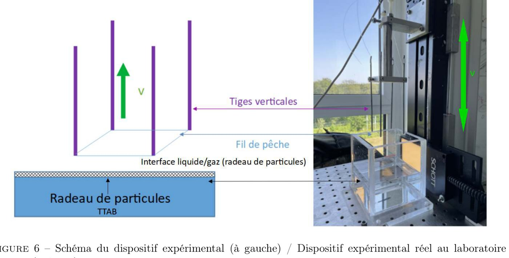
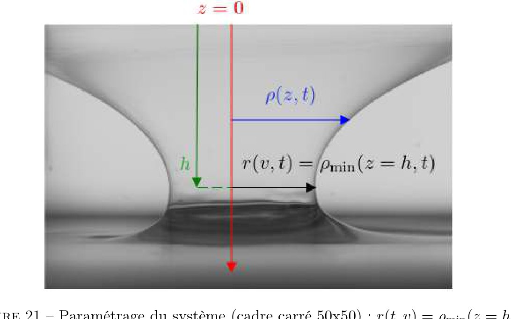
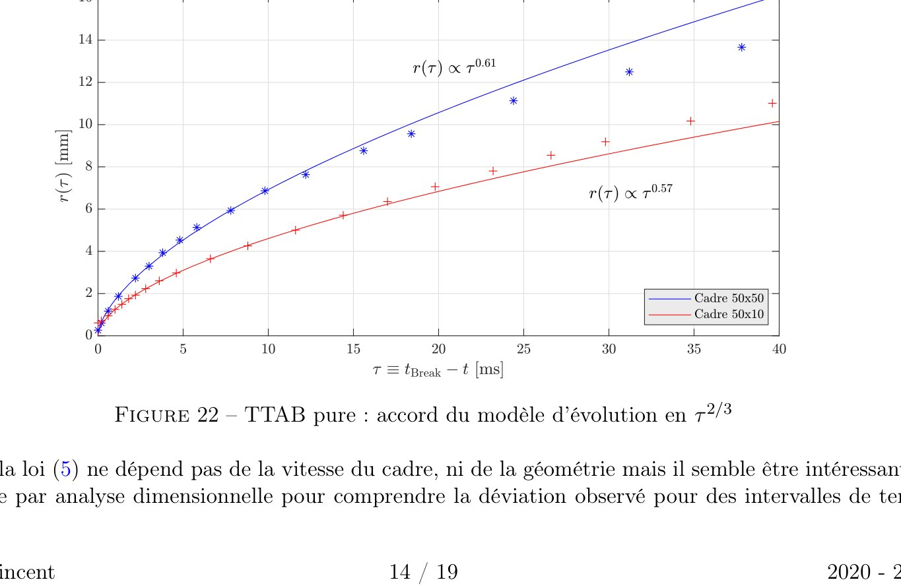
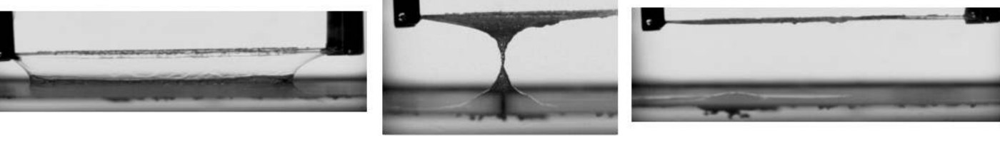
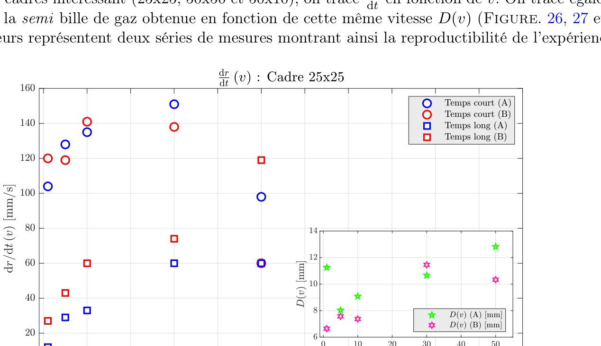

Stage de recherche · Laboratoire Navier (École des Ponts, Université Gustave Eiffel, CNRS) · 2021 (2 mois) · encadrante F. Rouyer
Banc instrumenté pour billes de gaz
Banc expérimentalImagerie rapideTraitement de données

Résumé
Une bille de gaz est une bulle armée d'une couche de particules solides. Bien plus résistante qu'une bulle de savon, elle intéresse l'isolation acoustique, l'amortissement des vibrations ou l'encapsulation de gaz — mais sa formation restait mal comprise.
J'ai monté un banc où un cadre est extrait d'un radeau de particules flottant sur de l'eau savonneuse : le film granulaire s'étire en caténoïde, se pince et peut se refermer en (semi-)bille de gaz. J'ai fait varier la géométrie du cadre (10×10 à 50×50 mm), la vitesse d'étirement (1 à 50 mm/s) et le chargement en particules, en vérifiant à chaque fois la reproductibilité.
Côté expérimental
Un vrai travail expérimental : conception et montage du banc (platine verticale, cadres, supports en fil de pêche), synchronisation d'une caméra rapide au-delà de 1000 images/s car la fermeture dure moins d'une seconde, puis écriture du traitement d'images en Python qui extrait le rayon du col au cours du temps, avec détection automatique de l'instant de rupture. Deux séries de mesures indépendantes ont été réalisées pour vérifier la reproductibilité.
Méthode et équations
La tension de surface \(\gamma\) agit comme une force par unité de longueur et la pression saute à travers une interface courbe (Young–Laplace) :
$$\mathrm{d}\mathbf{f}=\gamma\,\mathrm{d}\ell\,\mathbf{n},\qquad \Delta p=\gamma\left(\frac{1}{R_1}+\frac{1}{R_2}\right)$$Une caténoïde de savon entre deux anneaux de rayon \(R\) devient instable quand la hauteur atteint \(h_c\approx 2R/3\). Ensuite, le rayon du col suit une loi de puissance (Chen & Steen), avec \(\tau=t_{\text{rupture}}-t\) :
$$r(\tau)=\left(\frac{\gamma\,\tau^{2}}{\rho}\right)^{1/3}\propto\tau^{2/3}$$Le film chargé est considéré rompu quand \(r\approx(1+\tfrac{\sqrt2}{2})\,D_p\), c'est-à-dire un empilement compact de particules — le passage d'une description continue à une description discrète.
Figures









